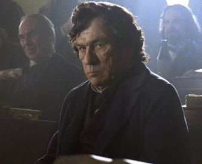

|
Thus does Confederate Vice-President Alexander Stephens learn the bad news in 1865. Steven
Spielberg's Abe Lincoln has dashed all hopes for a negotiated settlement to the Civil War
based on reunion without emancipation, or at least constitutional emancipation. That
distinction rests at the heart of Spielberg's narrative: his Lincoln recognizes the legal
fragility of the Emancipation Proclamation and desperately presses for constitutional
emancipation--presses so forcibly that his congressional hardball might have made even
Lyndon Johnson blush. (Or smile.)
This is hardly surprising. Spielberg's Lincoln is also Doris Kearns Goodwin's Lincoln.
|

Tommy Lee Jones as Pennsylvania Congressman
Thaddeus Stevens
|
shoot, which wasn't hard," said James Spader, who plays a garrulous lobbyist named W.N.
Haunting and haunted, humorous, heroic, and humane, the president, brilliantly portrayed
by Daniel Day-Lewis, impressed more than surprised me. He is still the Lincoln who freed
the slaves--here through his ruthless if principled commitment to passage of the Thirteenth
Amendment, rather than the more conventionally emphasized Emancipation Proclamation. No
slaves free themselves in this film. The process is top down, and it is the crowning
achievement of two men: Lincoln, who came to the goal gradually; and Thaddeus Stevens, who
never veered from the path. Lincoln finally compromises his integrity; Stevens his
commitment to "racial equality." I watched the film in northwest Washington, but one has
to wonder if Spielberg is talking to my neighbors on Capitol Hill.
I'm not a film critic, a Lincoln scholar, or a lawyer (which Spielberg's Lincoln seems
to be above all else). But I am a father, and the son of a politician. And this Lincoln is
very much both; in the theater this evening I found myself identifying easily with the
tensions forced upon him by each role in turn. I resisted worrying about the "historical
accuracy" of either the film as a whole, or the portrayal of Lincoln. Do I really care how
much time Daniel Day-Lewis spent trying to figure out what the real Lincoln sounded like?
I do not; no more than I care about the number of buttons sewn onto the uniforms of Civil
War re-enactors. What I care about is this: the film identifies the big issues, gets it
right that the Civil War was first, always, and foremost about slavery. It may well make
audiences think. And argue.
Think (and argue) about what? Fairness, equality, justice: these are the values that
lie at the center of much of the debate over the timing and politics of constitutional
emancipation. Gone is Shelby Foote's fable; the Civil War depicted here is not a struggle
between men of honor on both sides. The honorable conflict is among men who disagree about
the meaning of "All men are created equal" (and yes, in this film it's all about men), and
about the politics of emancipation. Spielberg has no patience with anyone beginning with a
premise other than that: slavery was "done."
Perhaps Spielberg's Lincoln intrigues me because he asks questions and tells stories.

Abraham Lincoln, as portrayed by Daniel Day-Lewis,
and Robert Lincoln, as portrayed by Joseph Gordon-Levitt
|
He is curious about human aspirations, and comfortable with uncertainty and
ambiguity--comfortable but not satisfied. He might have made a good historian and a good
teacher.
Historians will disagree over whether this was Lincoln indeed. My friend and colleague
Lerone Bennett will wonder what happened to the evidence that Lincoln never believed in
racial equality. David Blight will no doubt scratch his head over the absence of Frederick
Douglass. Others will question the accuracy of this Lincoln's approach to the presidency
and presidential power, or the portrayal of family dynamics in the White House; or the
implications of a film about emancipation that elides the agency of slaves and ex-slaves
(except for the role of black soldiers). Others will note that Spielberg seems to get the
importance of manhood, but doesn't really know how to use gender as a category of
political analysis. This is what a film like this should do: stimulate discussion about
history. I encourage colleagues to engage the film in the public realm--in newspapers and
blogs and on the radio--in language that is accessible, and in a voice that speaks
especially to people who might not readily accept concepts and perspectives taken for
granted within the academy.
Schuyler Colfax, then the speaker of the House of Representatives, reminds us that
emancipation was not just another issue for legislation and debate: "This isn't usual.
This is history." Well, we're historians. Let's get out there and talk about history.
Steven Spielberg, who is a lot better than we are at introducing big issues into public
discussion, has started the debate. Let us continue the conversation.
Source: James Grossman in Perspectives on History (November 2012).
|